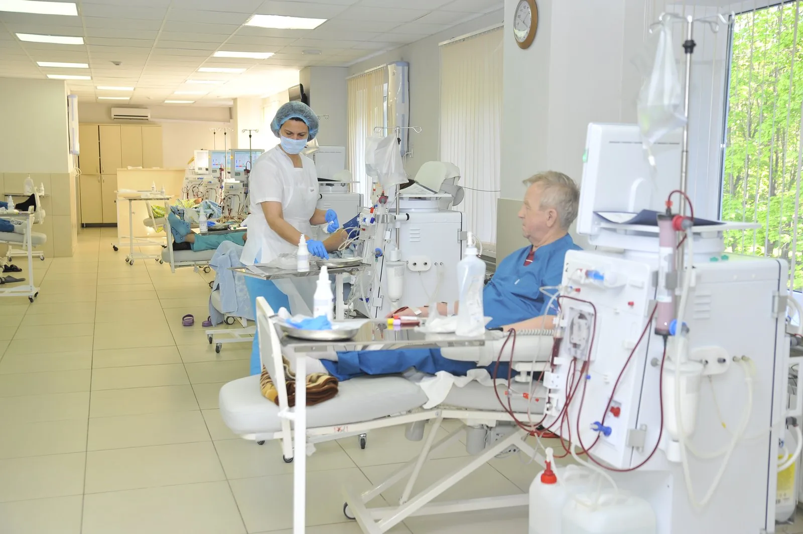

Проектирование центров гемодиализа
Разработка концепции, медицинских и инженерных решений для центров амбулаторного гемодиализа.
Подробнее →Проектируем, оснащаем и запускаем центры амбулаторного гемодиализа по всей России.

Офис в Казани
420039, Республика Татарстан, г. Казань, ул. Алексея Козина, д. 7, офис 1080
Пн–Пт 09:00–18:00
О КОМПАНИИ
Консалтинговая компания «Клиники диализа» обеспечивает стабильную работу центров амбулаторного гемодиализа по всей России. Первые центры в Нижнекамске и Бугульме открылись в 2008 году.
Сегодня компания проектирует, оснащает и запускает специализированные центры, сопровождает проекты государственно-частного партнёрства и помогает медицинским организациям выстраивать устойчивую операционную модель.
УСЛУГИ
Разработка концепции, медицинских и инженерных решений для центров амбулаторного гемодиализа.
Подробнее →Подбор, поставка и ввод в эксплуатацию оборудования для гемодиализа.
Подробнее →Запуск центра, обучение персонала, организационная и медицинская поддержка.
Подробнее →Подготовка и сопровождение проектов ГЧП в здравоохранении.
Подробнее →РАЗРАБОТКА САЙТОВ
Разработка сайтов, веб-приложений и интеграций.
Делаю лендинги и сайты-визитки под запуск услуги, продукта или личного бренда. Продумываю структуру и прототип, собираю адаптивную страницу, подключаю формы заявок, аналитику и базовую SEO-разметку. На выходе — готовый сайт, который можно показывать клиентам и запускать рекламу.
Проектирую и разрабатываю SPA на Vue 3 или React: архитектура, роутинг, управление состоянием, авторизация, роли, личный кабинет, таблицы, фильтры и работа с REST/GraphQL. Пишу на TypeScript, оставляю понятную документацию и передаю код, который можно развивать.
Собираю интернет-магазин с каталогом, поиском, карточками товаров, корзиной, оформлением заказа, промокодами и доставкой. Подключаю оплату, уведомления, статусы заказов и удобную админку для управления ассортиментом.
Беру в работу существующий сайт или приложение: провожу аудит кода, нахожу причины ошибок, исправляю баги, обновляю зависимости и добавляю новые функции. Могу взять проект на регулярную поддержку и вести документацию.
Верстаю по макетам Figma с точностью до пикселя: мобильные, планшетные и десктопные состояния, семантика, доступность, аккуратные hover/focus-состояния. Проверяю в современных браузерах и на реальных экранах.
Подключаю к сайту платежи, CRM, карты, доставку, уведомления и внутренние API. Настраиваю REST/GraphQL, авторизацию по токенам, webhooks, ретраи и логирование ошибок, чтобы обмен данными работал автоматически.
Провожу технический SEO-аудит: индексация, ошибки, meta-теги, Open Graph, JSON-LD, sitemap, robots.txt и внутренняя перелинковка. Оптимизирую Core Web Vitals и скорость загрузки, чтобы поисковики корректно понимали страницы.
ЦЕНТРЫ
Центры амбулаторного гемодиализа в пяти городах России.
Нижневартовск
г. Нижневартовск, ул. Интернациональная, д. 34 А/П, строение 2
+7 (3466) 21-90-84Пн–Сб 08:00–04:00
На карте →ПРЕСС-ЦЕНТР
2020-09-11
Сегодня празднует свой день рождения генеральный директор ГК «Клиники диализа» Камиль Равилевич Фахрутдинов.
Читать →СОТРУДНИЧЕСТВО
Оставьте контакты — обсудим задачи и предложим решение.